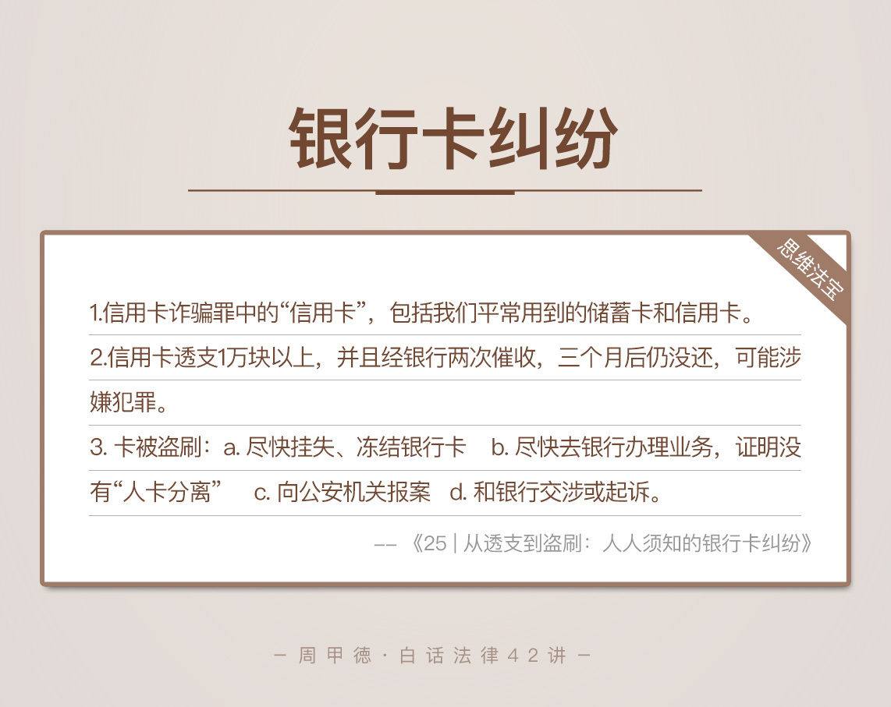

- 00 开篇词 这年头，你真应该懂点法律常识.md.html
- 01 “老周，我想知道” 常见法律认知盲区（一）.md.html
- 02 “老周，我想知道” 律师就在你身边（二）.md.html
- 03 “老周，我想知道” 律师就在你身边（三）.md.html
- 04 “老周，我想知道” 律师就在你身边（四）.md.html
- 05 创业未捷老板跑，社保工资哪里讨？.md.html
- 06 保密还是“卖身”，霸王条款怎么看？.md.html
- 07 编造流言蹭热度？看守所里降温度！.md.html
- 08 合同在手欠款难收，报警有用吗？.md.html
- 09 致创业：谁动了我的股权？.md.html
- 10 又见猝死！工“殇”究竟是不是工伤？.md.html
- 11 期权的“前世今生”.md.html
- 12 裁员面前，你能做的还有什么？.md.html
- 13 抄袭、盗图为什么做不得？.md.html
- 14 加班、工资、休假，你知道多少？.md.html
- 15 受贿原来这么“容易”.md.html
- 16 今天你用“VPN”了吗？.md.html
- 17 漏洞在眼前，可以悄悄破解吗？.md.html
- 18 “爬虫”真的合法吗？.md.html
- 19 非法集资到底是个啥？.md.html
- 20 黄色网站？不仅仅是“黄色”罪名.md.html
- 21 谁修改了我的积分资产？.md.html
- 22 外挂真能大吉大利吗？.md.html
- 23 如何看待“从删库到跑路”？.md.html
- 24 “伪基站”是你的避风港吗？.md.html
- 25 “网络诈骗”真的离你很远吗？.md.html
- 26 智斗中介：“北上广”租房图鉴.md.html
- 27 买买买！买房的“避坑”指南.md.html
- 28 闪婚又闪离，彩礼怎么理？.md.html
- 29 离婚还想和平？你要这么做.md.html
- 30 遗产继承的爱恨情仇.md.html
- 31 骗术升级？假结婚、假离婚的那些事儿.md.html
- 32 孩子学校受伤，谁之过？.md.html
- 33 如何让欠债还钱真正“天经地义”？.md.html
- 34 从透支到盗刷：人人须知的银行卡纠纷.md.html
- 35 远离“套路贷”的套路大全.md.html
- 36 危险！酒驾为什么被罚那么重？.md.html
- 37 老人倒地，“扶”“不服”？.md.html
- 38 “能动手就别吵吵”，代价你真的知道吗？.md.html
- 39 发生交通事故，如何处理？.md.html
- 40 交通事故综合法宝.md.html
- 41 婚姻家庭综合法宝.md.html
- 42 买卖房屋综合法宝.md.html
- 一键直达 法律专栏“食用”指南.md.html
- 加餐 “新冠肺炎”影响下，17个常见法律问题解答.md.html
- 结束语 法律，不会终止的篇章.md.html
- 捐赠
34 从透支到盗刷：人人须知的银行卡纠纷
银行卡，我们每个人都不陌生，钱包里放着四五张银行卡可能都很正常。同时，银行卡也十分重要，毕竟可能就是我们的全部家当了。不过，虽然每天会用到，你真的清楚了解它的规则和风险吗？
我估计答案是否定的，毕竟每年的银行卡纠纷案子，可真不少见。使用规则主要涉及经济领域，我就不多说了，我今天想讲的，正是银行卡的风险和法律问题，毕竟保管不善或者使用不当，都可能让你的银行卡陷入危机。
正式开讲之前，我想先纠正一种常见的错误看法，就是那些认为银行卡一旦被盗刷，很难被追回的观点。其实结果恰恰相反，只要你搞清楚流程，采取合适的措施，银行卡被盗刷很容易维权。
我代理过的两个被盗刷的案件，受害人都得到了银行的全额赔偿，所以，今天所讲的知识和经验，你很有必要好好了解。
我们先来看看这个很常见的案件。小孙在外出差时，突然收到四条银行发来的取款记录短信，说是银行卡里的12万块全被转走了。小孙半信半疑，看了看自己随身的行李，银行卡还好好地在钱包里躺着呢。可是，到附近的ATM机一查，钱真的没了。不是诈骗，那可不就是盗刷了吗。
这种时候，小孙应该怎么办呢？银行卡被盗刷，究竟应该怎么维权？与此相关的银行卡纠纷还有哪些呢？老规矩，我们先来弄清楚，银行卡相关的法律知识。
信用卡诈骗罪
银行卡，根据银行划定的不同使用范围，可以分为借记卡和信用卡：
借记卡，就是我们平常所说的储蓄卡，在老一辈人口中也常被笼统叫做“银行卡”，可以存款、取款，并没有透支功能。一般来说，发工资、存款、理财等，我们用的正是借记卡。
信用卡，是具有透支功能的卡片。在银行授权额度内，你可以提前消费，以后再还款。
现在办理银行卡越来越简单。很多都是在公司楼下或人多的地方，简单摆摊儿放个桌子，你只要提供身份证就能当场办理。没有人会告诉你，办卡，尤其是办信用卡会有啥风险，更不会告诉你，透支甚至会构成刑事犯罪，也就是信用卡诈骗罪。
要了解信用卡诈骗罪，首先要清楚这个罪名的“信用卡”的法律含义。这里的信用卡，跟我们刚刚所讲的，银行分类里的信用卡意义不同。
法律角度来说，信用卡诈骗罪中的“信用卡”，是指商业银行或其他金融机构发行的，具有消费支付、信用贷款、转账结算、存取现金等全部功能或部分功能的电子支付卡。换句话说，法律上的“信用卡”范围更广，我们刚刚所说的两种银行卡其实都属于这个信用卡。
那么哪些情况，会构成信用卡诈骗罪呢？
一般来说有这么四种：
使用伪造的信用卡；
用假身份证办理信用卡；
冒用别人的信用卡；
恶意透支信用卡，尤其数额较大的情况。
前面三种，因为涉及假证或者类似盗窃的行为，很好理解，一般人也不会去碰。但第四种透支问题，估计是普通人最常犯也最受伤的情况，也让不少人都觉得挺冤枉。
现在的商家营销活动五花八门，又是双十一又是双十二的，就是为了从你的口袋里掏钱。自己一时没忍住“剁了手”，然后不能及时还钱，怎么就是犯罪了呢？
恶意透支
事实上，如果构成恶意透支，真的很严重。刑法规定的恶意透支，是指持卡人以非法占有为目的，超过规定额度或规定时间，透支使用信用卡，并且在银行催款2次后，超过3个月仍不还钱的行为。
我解释一下这里的“非法占有为目的”，一般是指这么五种情况。
明知道没有还款能力，却大额度透支用卡，最终还不起的情况。
肆意挥霍透支得到的钱，最终还不起的情况。
透支后跑路或者换联系方式，以逃避银行催债的情况。
抽逃、转移资金等各种隐藏自己的财产，以逃避还款的情况。
用透支得来的钱财，进行违法犯罪活动的情况。
这五种情况，基本上覆盖了所有透支的场景。这类情况下，只要你透支达到一定额度，并且在银行催款2次后，超过3个月仍不还钱的，都会涉嫌信用卡诈骗罪。
信用卡诈骗罪的量刑也是比较重的，主要根据恶意透支的钱数进行判定：
1万以上、10万以下的，属于数额较大，可能会判五年以下有期徒刑或拘役；
10万以上、100万以下的，属于数额巨大，可能会判五年以上、十年以下有期徒刑；
100万以上的，最高会判无期徒刑。
另外要注意，这个恶意透支的数额，并不包括复利、滞纳金、手续费等银行收取的费用。虽然信用卡的这一点很可恶，如果不能一次不清，会按你一开始的欠款额度来收利息、滞纳金等，但是法律上量刑不包括这些费用。
比如说，你欠了1万，只按最低还款额还了2000元，那么，银行在收取利息及滞纳金等费用时，并不会按8000来算，还是按照1万来计算，只要你不能一次还清，后面的费用都是按原总欠款来算的，也是不小的一笔钱。
被盗刷了，怎么办？
现在来看小孙的经历。小孙很可能是在哪里刷卡时，被机器上的木马盗取了信息，然后丢了钱。根据我以往的办案经验，我给小孙这么几个建议：
首先，及时拨打发卡行的客服电话，对银行卡紧急干预，比如挂失、冻结等。这样，银行也可以根据具体情况，及时通过警方并冻结这笔钱，及时止损。
另外，拨打银行客服时，记得通话录音。这样在报案时，录音就可以作为证据，证明案件的真实性，使你的案件容易被警方立案。
第二步，尽快带着银行卡，到附近银行办理业务，并保留好底单；或者到ATM机上存款，并保留好存款底单。这么做，是为了证明卡还在自已身上，并没丢失。所以，不是因为把卡给了别人，或者丢了卡，才导致的丢钱。
第三步，报警处理。一般银行卡被盗，正确的报案地点，应该是发卡银行当地的公安机关，或者钱财被盗刷地点的公安机关。在做完前两步后，应该及时去公安机关报案，这样，警方可以调取相关转账信息来破案。
第四，和银行沟通，要求银行赔偿，如果沟通不顺利，及时带着上面的这些证据，咨询律师并起诉银行。银行卡就在自已身边，却被盗刷了这么多钱，即使自己有一定的责任，更多的防范责任也一定是在银行身上。
思维法宝
最后，我们来简单总结一下这节的内容。
信用卡诈骗罪中的“信用卡”，包括我们平常用到的储蓄卡和信用卡。当你的信用卡透支，却无力还款时，就已经在犯罪的边缘了。透支1万以上，经银行两次催收，超过三个月仍然没还的，可能要承担刑事责任。
而你的银行卡如果被盗刷，一定要记住“追钱四步曲”：
尽快挂失、冻结银行卡；
尽快去银行办理业务，证明卡在自已身上，不存在“人卡分离”；
向公安机关报案；
和银行交涉或起诉。

其实，我始终觉得信用卡诈骗罪，在透支方面的定罪也是有些问题的。法律应该同样加大发卡银行的责任，要求发卡银行在办理信用卡时，明确告诉办卡人有哪些风险，而不是任由银行工作人员为了冲业绩任意发卡，把责任和风险都押在办卡人的道德上。
在金钱面前，在生活窘境面前，道德和模糊的法律意识往往阻止不了人们的渴望和犯错。但是作为成年人，清楚了相应的法律风险后，我们也应该心里有数。
信用卡的使用要匹配自己的经济基础，不然可能就是万劫不复。这个世界，没有免费的午餐，天上掉下来的馅饼，不是脏的也是有毒的。
最后，给你留一个思考题：
老张用虚假身份应聘了超市收银员的工作，然后趁顾客刷卡时，利用读卡器盗取顾客的银行卡信息，并偷偷记下密码，最后利用盗取的信息制成伪卡，然后取现。后来老张被警方抓获，他将会接受什么样的处罚呢？
欢迎留言写下你的判决，也欢迎你把这篇文章转给亲人朋友，尤其是家里的老人和涉世未深的年轻人。银行卡不是什么魔兽，但是处理不当，受损失的一定是我们自己。
© 2019 - 2023 Liangliang Lee. Powered by gin and hexo-theme-book.